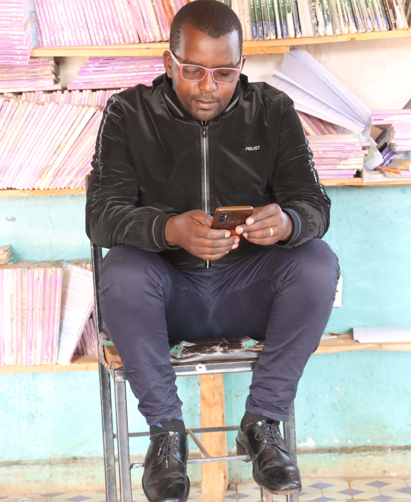

Mathematics

- Core Maths
- Essential Maths
From The Head of Department
Mathematics is the center of modern education. It is called the language of science. To equip our students with a scientific worldview, we use mathematics to nurture their curiosity, sharpen their analytical problem-solving skills, instill a creative and objective approach to issues in social and professional life.
Sciences

- Physics
- Chemistry
- Biology
From The Head of Department
Science is the pursuit of knowledge and understanding of the natural world through observation and experimentation. Our department is committed to fostering a love for science in our students and encouraging them to think critically about the world around them.